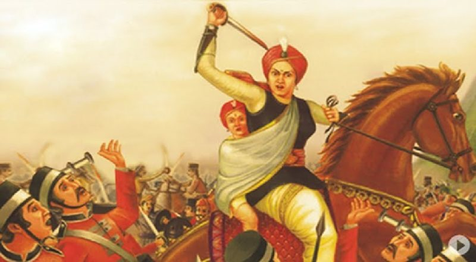
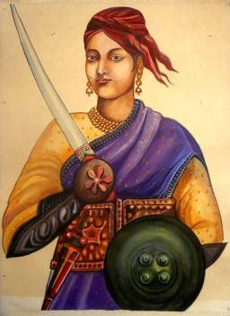

<!DOCTYPE html>
<html>
<head> 
  <link rel="stylesheet" href="body.css"
<title></title>
<style>

h1 {text-align: center;}
</style>

</head>
</html>


<body style="background-color:DodgerBlue;">

  <h1>JHANSI RANI LAKSHMI BAI</h1>

  
 

<p>Lakshmi Bai, also spelled Laxmi Bai, (born c. November 19, 1835, Kashi, India—died June 17, 1858, Kotah-ki-Serai, 
    near Gwalior), rani (queen) of Jhansi and a leader of the Indian Mutiny of 1857–58.</p>
<p>Brought up in the household of the peshwa (ruler) Baji Rao II, Lakshmi Bai had an unusual upbringing for a 
    Brahman girl. Growing up with the boys in the peshwa’s court, she was trained in martial arts and became 
    proficient in sword fighting and riding. She married the maharaja of Jhansi, Gangadhar Rao, but was widowed 
    without bearing a surviving heir to the throne. Following established Hindu tradition, just before his death 
    the maharaja adopted a boy as his heir. Lord Dalhousie, the British governor-general of India, refused to recognize 
    the adopted heir and annexed Jhansi in accordance with the doctrine of lapse. An agent of the East India Company 
    was posted in the small kingdom to look after administrative matters.</p>
<p>The 22-year-old queen refused to cede Jhansi to the British. Shortly after the beginning of the mutiny in 1857, 
    which broke out in Meerut, Lakshmi Bai was proclaimed the regent of Jhansi, and she ruled on behalf of the minor 
    heir. Joining the uprising against the British, she rapidly organized her troops and assumed charge of the rebels 
    in the Bundelkhand region. Mutineers in the neighbouring areas headed toward Jhansi to offer her support.</p>
    
<p>Under Gen. Hugh Rose, the East India Company’s forces had begun their counteroffensive in Bundelkhand by January 1858. 
    Rose captured Saugor (now Sagar) in February and then turned toward Jhansi in March. The company’s 
    forces surrounded the fort of Jhansi, and a fierce battle raged. Offering stiff resistance to the invading forces, 
    Lakshmi Bai did not surrender even after her troops were overwhelmed and the rescuing army of Tantia Tope, another rebel 
    leader, was defeated at the Battle of Betwa. Lakshmi Bai managed to escape from the fort with a small force of palace 
    guards and headed eastward, where other rebels joined her.</p>
<p>Tantia Tope and Lakshmi Bai then mounted a successful assault on the city-fortress of Gwalior. The treasury and the 
    arsenal were seized, and Nana Sahib, a prominent leader, was proclaimed as the peshwa (ruler). After taking Gwalior, 
    Lakshmi Bai marched east to Morar to confront a British counterattack led by Rose. Dressed as a man, she fought a 
    fierce battle and was killed in combat.</p>
<a href="https://en.wikipedia.org/wiki/Rani_of_Jhansi" target="_blank">Visit Wikipedia to know more about Jhansi Lakshmi Bai</a> <br>

<a href="Alluri Seetharamaraju.html"><button>Previous</button></a>
</body>
</html>
